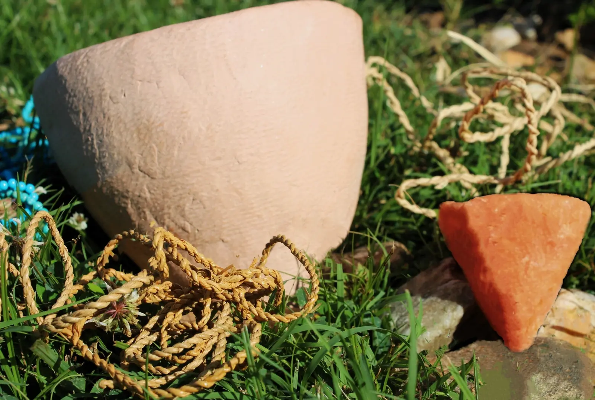
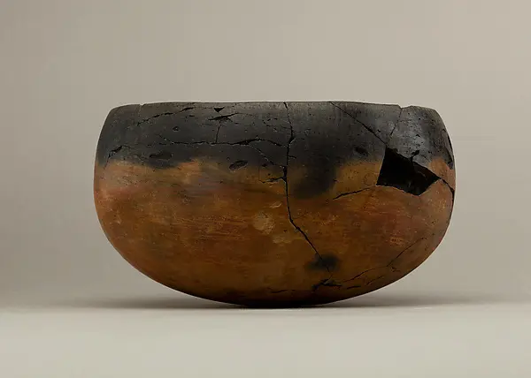
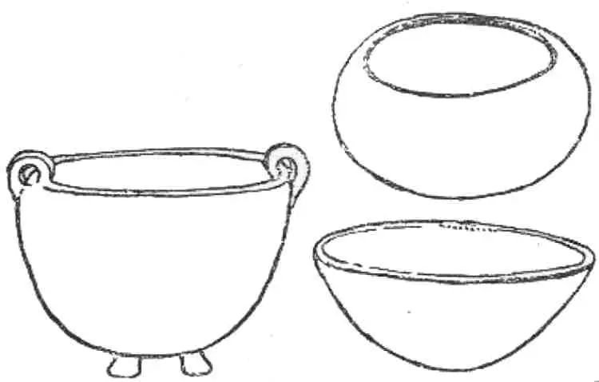
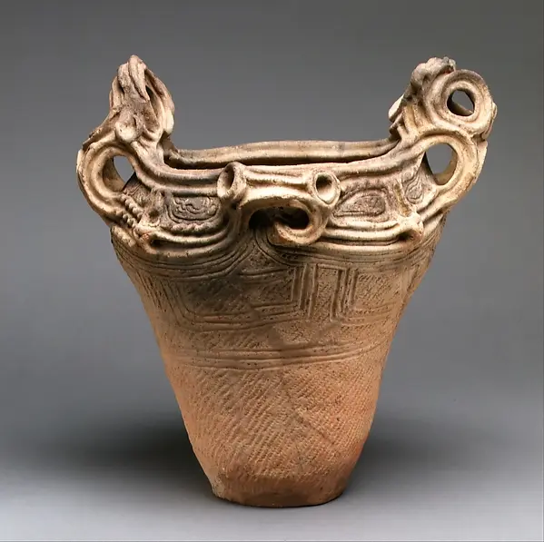
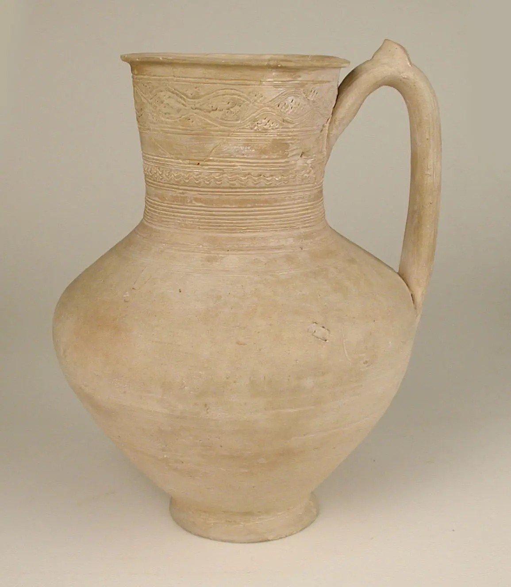
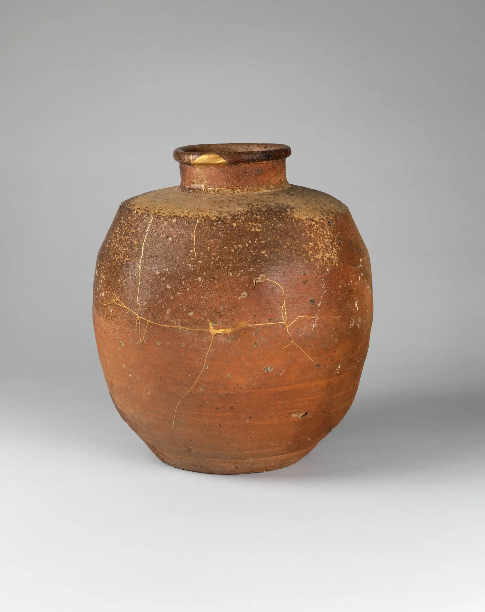
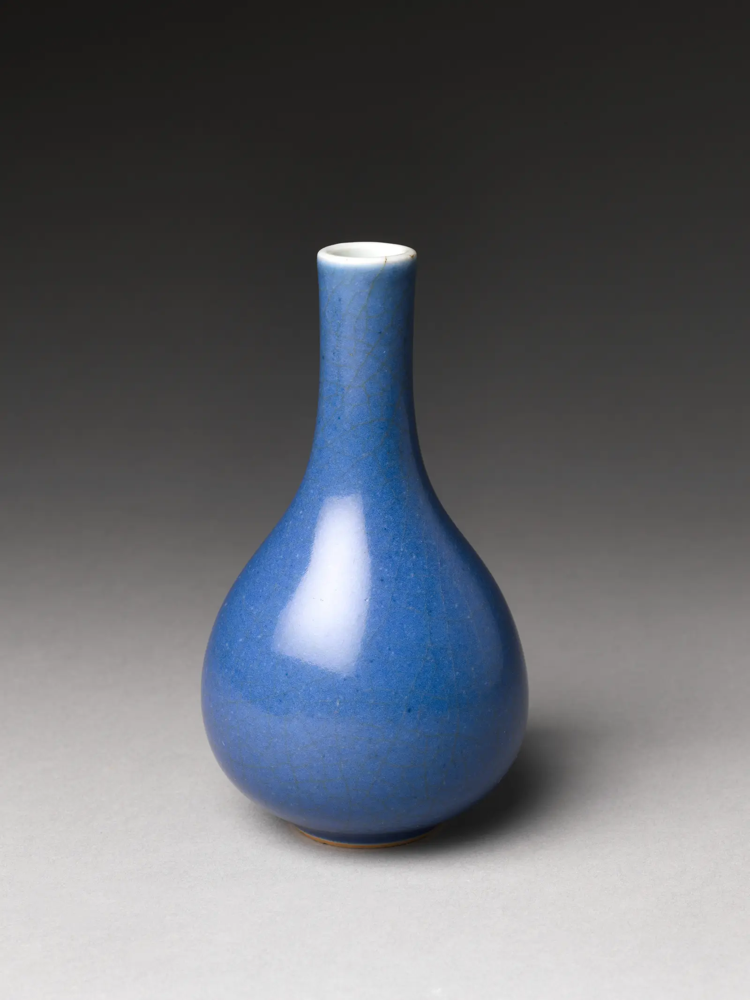

Understand
Read clay state
Distinguish workable, leather-hard, bone-dry, bisque, and glaze-fired material—and name what each state permits.
Handbuilding begins before pinch, coil, or slab. It begins when you can feel what the clay is ready to do—and predict what it will do next.

Control form while water, strength, and dimensions continuously change.
Before making a “good pot,” learn to make clay legible.
Distinguish workable, leather-hard, bone-dry, bisque, and glaze-fired material—and name what each state permits.
Make a pinch cup, coil ladder, joined slab pair, and measurable shrinkage bar.
Separate what you observed from what you infer, then choose the smallest useful next test.
Why can a pot survive for thousands of years after firing, yet collapse, crack, or return to mud before firing?
At working moisture, mineral particles can move relative to one another. As water leaves, the body stiffens and shrinks. During firing, heat transforms the body into ceramic; it cannot be returned to plastic clay.
“Dry for 24 hours” is not a material description. Thickness, clay body, climate, airflow, and covering all alter the result—and one object can contain several moisture states at once.
| State | Feel and appearance | Useful operations | Main risk |
|---|---|---|---|
| Plastic | Cool, yielding, bends smoothly | Pinch, coil, roll, model, compress | Collapse or stretching too thin |
| Soft leather-hard | Holds form; still accepts pressure | Refine, alter, compatible joins | Distortion and moisture mismatch |
| Firm leather-hard | Rigid, cool, damp | Trim, carve, careful additions | Snapping or weak late joins |
| Bone-dry | Lighter, room-temperature, brittle | Inspect and handle gently | Breakage and rewetting damage |
| Bisque | Hard, porous ceramic | Apply approved surface materials | Chips and uneven application |
| Final-fired | Developed color and strength | Evaluate against intent | Hidden fit or durability problems |

This Badarian pottery bowl is more than 5,000 years old. Its profile, surface, wear, and repaired or unrepaired damage are evidence. Ceramics become durable after firing—but they never stop recording their history.
Bowl, ca. 4400–3800 BCE · Public Domain · The Metropolitan Museum of Art
Drying rate varies with clay, thickness, climate, airflow, and covering. Different parts of one object can also retain different amounts of water.
Uneven drying. Different parts shrink at different times, producing internal stress. Speed matters mainly because it can intensify those differences.
Why can a beautiful, well-built piece still damage a kiln shelf—or fail completely?
Clay and glaze are not chosen independently of firing. A low-fire body in a hotter firing may deform or melt. A body fired too cool may remain excessively porous or weak. Package ranges establish candidates, not guarantees.
Exact manufacturer, product name, and stated firing range.
Slip, engobe, underglaze, oxide, and glaze ranges and studio approval.
Target cone or heat work, atmosphere, loading rules, and responsible operator.
No. The ranges overlap, so it is a plausible test candidate. The studio must approve both materials, and the glaze should be tested on that clay in that firing. Labels alone do not establish glaze fit, application quality, or functional suitability.
Two joined pieces look perfect when wet. The next day a crack traces the seam. What changed?
As water leaves, particles pack more closely and the body contracts. Connected areas that shrink at different times or rates pull against one another.
Repeated wetting can reset local drying, weaken the surface, increase local shrinkage, smear detail, and conceal a poor join instead of repairing it.
Sketch a mug-like form with a base, wall, rim, and handle. Draw arrows at faster-drying areas and circles at likely stress concentrations. Compare exposed rims and handle edges with the thicker base and handle terminals. Then write two changes that could make drying more even.
Technical references: Digitalfire on plasticity, drying shrinkage, and drying cracks.
Good studio practice keeps ceramic material on the table, in the bucket, and out of the air.
Clay and many dry ceramic materials contain crystalline silica. The concern is inhaling fine airborne dust, so prevention and wet cleanup matter more than simply cleaning after dust has spread.
Stable board, a few useful tools, and only the small amount of water needed.
Plastic bags or lidded boxes, ware boards, labels, and loose covering for equalization.
Damp sponge or wet mop. Never routine dry sweeping; avoid casual dry sanding.
Safety references: OSHA · Crystalline silica and Ceramic Arts Network · Studio dust.
Four small tests reveal more than one ambitious object made blindly.

Reveal pressure paths, wall response, rim cracking, and the common heavy-base problem.
Compare plasticity and moisture change through increasingly demanding curves.
Compare casual attachment with a mechanically integrated, moisture-matched seam.
Measure the body at plastic, bone-dry, bisque, and final-fired stages.

Successful attachment depends on intimate contact, compression, compatible moisture, thickness, and drying—not on slip as magical glue.
Slab demonstration by Ellin Beltz, CC BY-SA 3.0.
Using a 100 mm baseline makes the result tangible: 7 mm lost equals 7% shrinkage for that interval.
Label the clay, date, moisture state, dimensions, covering, intended firing, and changed variable. Photograph before and after from a consistent angle. Write observations first; interpret them second.
Replace “I like it” with a description precise enough to teach you something.
What does the outer contour do? Where does it change direction?
Where does the form expand, contract, lean, or hold tension?
How do base, belly, shoulder, neck, rim, and appendages meet?
Does it reveal, disguise, amplify, or contradict construction?
How does scale invite the hand, mouth, table, room, or movement?
Identify a principle—low expansion, abrupt transition, compressed opening—then apply it to another object type.

This Middle Jōmon vessel was coil-built, smoothed, and then marked with twisted cord. Rounded coils also form the openwork, flame-like rim. Describe how its silhouette and surface direct your eye before deciding whether you like it.
Deep Pot (Fuka-bachi), ca. 3500–2500 BCE · Public Domain · The Metropolitan Museum of Art
Inspiration · look comparatively
Compare a matte unglazed body, ash-marked stoneware, and luminous glazed porcelain. Look for what the clay and surface make visible.



Knowledge check · 3 questions
Choose one answer for each situation. Open a hint when needed; explanations appear after you check all three.
Completion is not mastery. Answer the questions without notes, then evaluate your actual samples.
Water enables the clay particles to move relative to one another under pressure; the body’s particle composition and structure determine how plastic it is.
As inter-particle water leaves, particles pack more closely together, reducing the object’s dimensions.
The rim is more exposed and contains less water, so it typically dries and shrinks earlier. The base retains moisture longer. Their connected, unequal movement creates stress.
The exact clay body, the surface materials, and the kiln program—including heat work, atmosphere, and studio approval.
It changes local moisture, particle movement, drying time, and shrinkage. Excess water can weaken surfaces and establish a moisture gradient.
Its location and shape; whether glaze enters it; moisture and thickness differences; construction and join history; drying setup; before-and-after photographs; and firing records.
Moisture, shrinkage, safety, compatibility, evidence.
Pressure, wall control, silhouette, and gesture.
Volume, profile, staged construction, and scale.
Plane, geometry, seams, curves, and warping.
Feet, handles, lids, spouts, balance, and use.
Texture, carving, slips, underglazes, glazes, tests.
Heat work, kiln records, faults, and correction.
Research, iteration, critique, and a coherent collection.